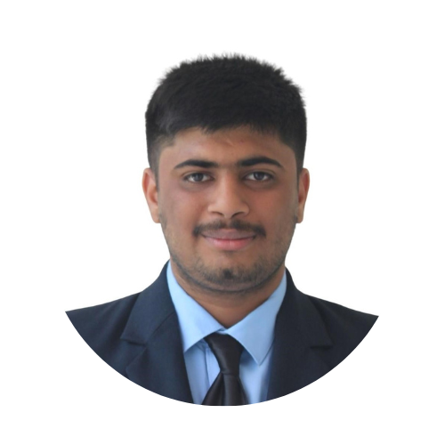

Our Team
Ritik Ratnawat
Backend Developer
He is a Tech Enthusiast and have a keen interest in Data Science, Machine Learning and Software Development. He is currently pursuing graduation in B.Tech Computer Science with Data Science specialization. He have great knowledge about various Programming languages, frameworks, Data Science, Machine Learning and its respective fields.

Vedant Deshmukh
Frontend Developer
Vedant is an data science and machine learning enthusiast who is currently persuing graduation. He has good knowledge about various programming languages, frameworks, technical fields and core concepts and possesses great problem solvings skills. He constantly keeps upscaling and polishing his knowledge and skills.